灰潮の入り江
細いペンの線と淡彩。白い石、灰色の水、曇天の光を、港から南の水門と北の採石場まで引き継ぎました。
制作確認用の一覧です。到着・調査・介入後の場面を含みます。画像を選ぶと原寸で開けます。
港

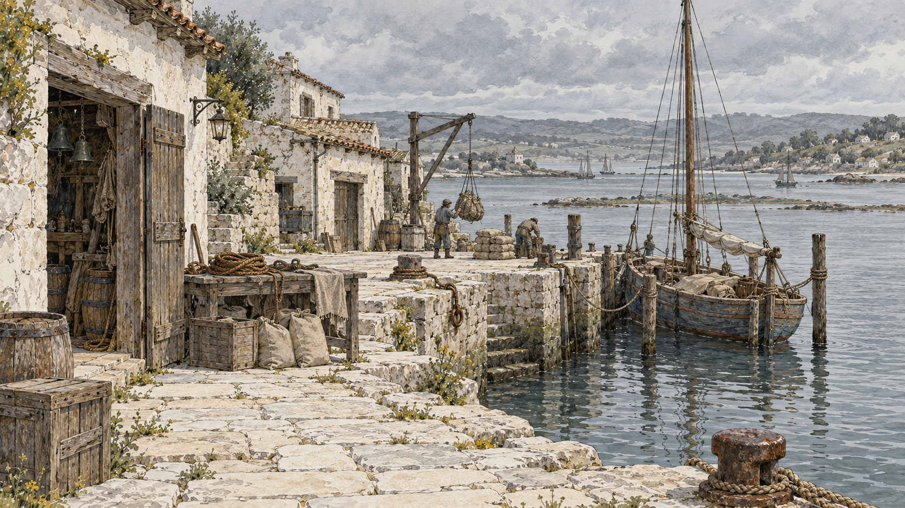
入り江の港
港の倉と船着場、配分用の道具。日常の仕事と白い入り江の全景。袋の印を数量保証として描かない。
原寸を開く ↗南の水門

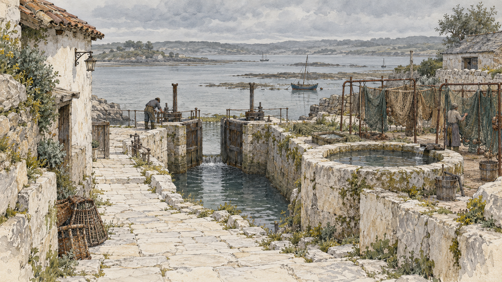
南の古い水門
未修理の白い道、水門、雨水槽、金属の干し枠と網。今回の画風比較に使う到着場面。
原寸を開く ↗
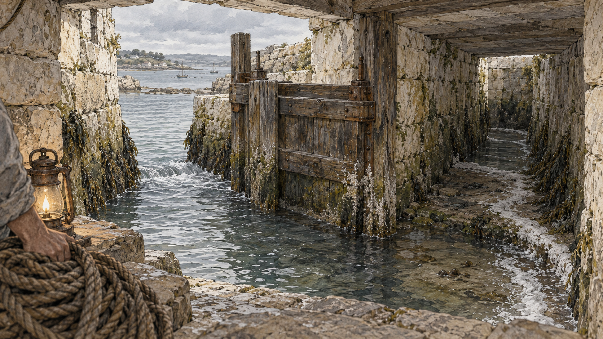
道の下の分岐
灯りと点検縄で旧溝を調べ、白い沈着の筋と分岐板を観察する。流れの偏りを示し、粉の効力の秘密を図解しない。
原寸を開く ↗
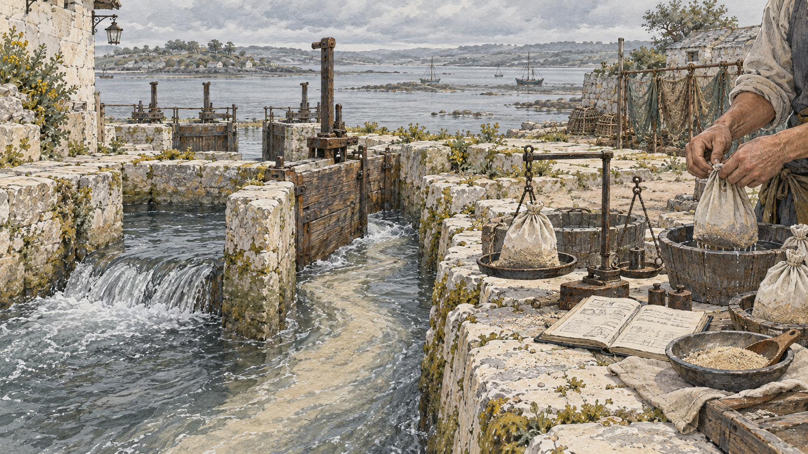
同量の砂で試す
淡水・目印の砂・回収袋・帳面を照合する作業。砂を魔法の防護剤として光らせず、記憶を石から読み出す絵にしない。
原寸を開く ↗
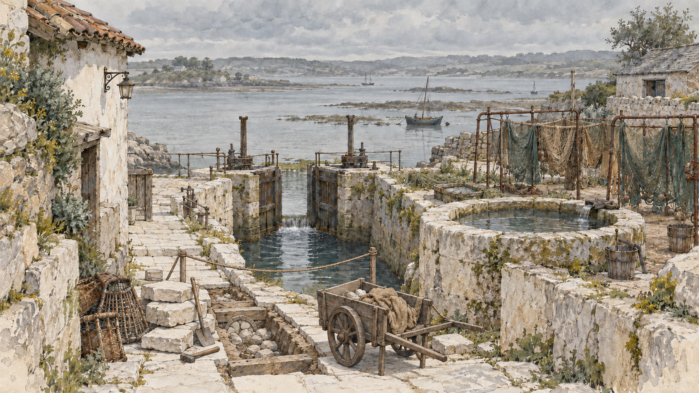
剝がした道
剝いだ敷石と塞いだ旧溝。通れなくなった道の手前に荷車が止まり、運ぶ仕事の負担が残る。修理だけで両方を保護した結果にしない。
原寸を開く ↗北の採石場

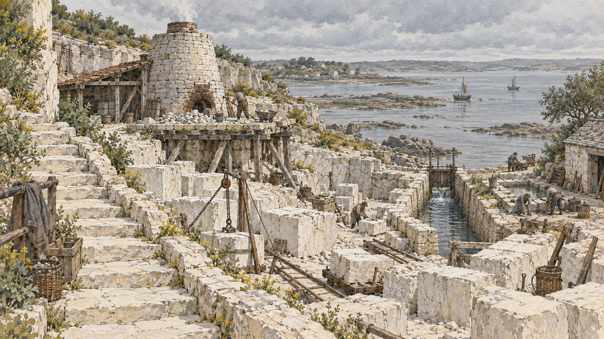
北の採石場
美しい白い階段と、その裏の窯台の支柱、粉を運ぶ溝。誇りと日々の補修の両方を読める景観。
原寸を開く ↗
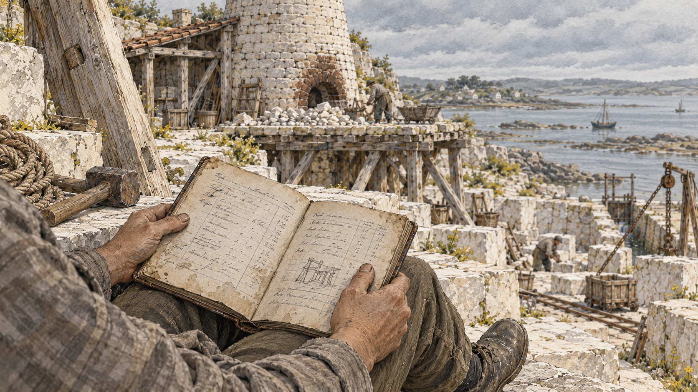
夜勤帳
作業者の膝に残した帳面、支柱点検の道具。本文はUIで出すので、画像中に読める契約文・固有名詞を描かない。
原寸を開く ↗
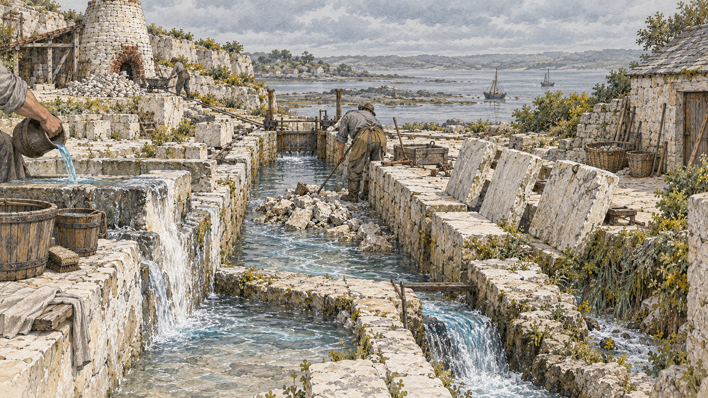
届かない色水
三枚の蓋を開けた溝、捨て口へ流れる色水、洗い場の白い溜まり。色水は普通の流路の目印。
原寸を開く ↗
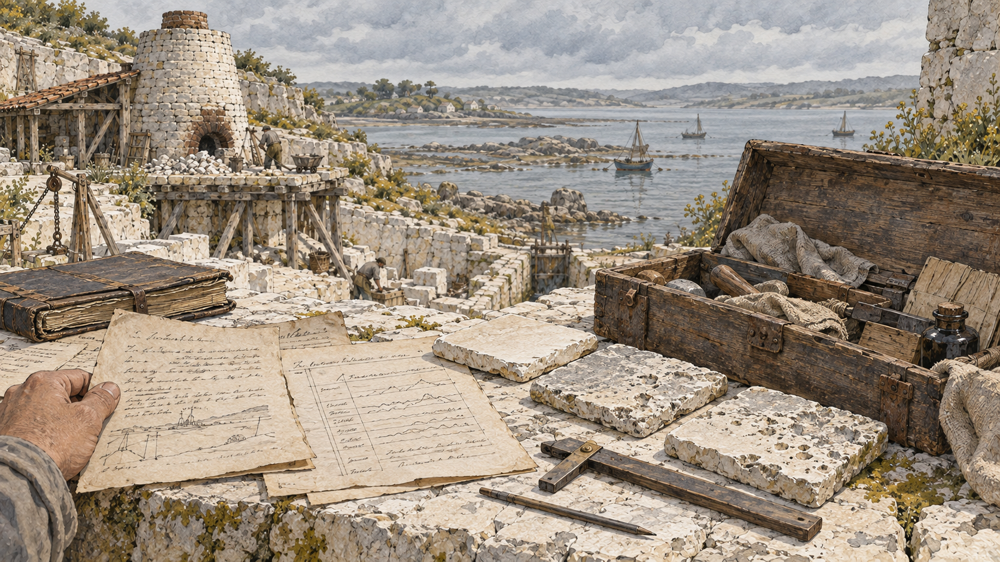
供述票と試験石板
開いた旧作業箱、供述票、流量表、侵食の境界が残る試験石板。供述票は紙の資料であり石に閉じ込めた記憶ではない。文字は判読できない筆跡に留める。
原寸を開く ↗
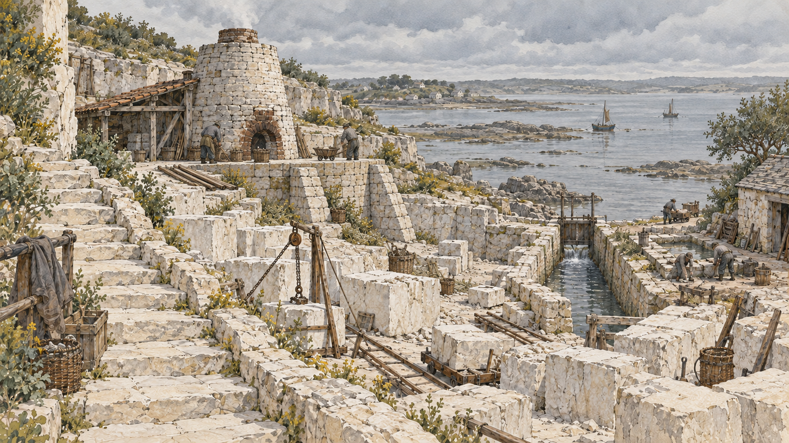
窯台を直したあと
抜いた木の支柱と座り直した窯台。窯を止めた作業後で、階段と溝は未修理。万能な再建の全景にしない。
原寸を開く ↗
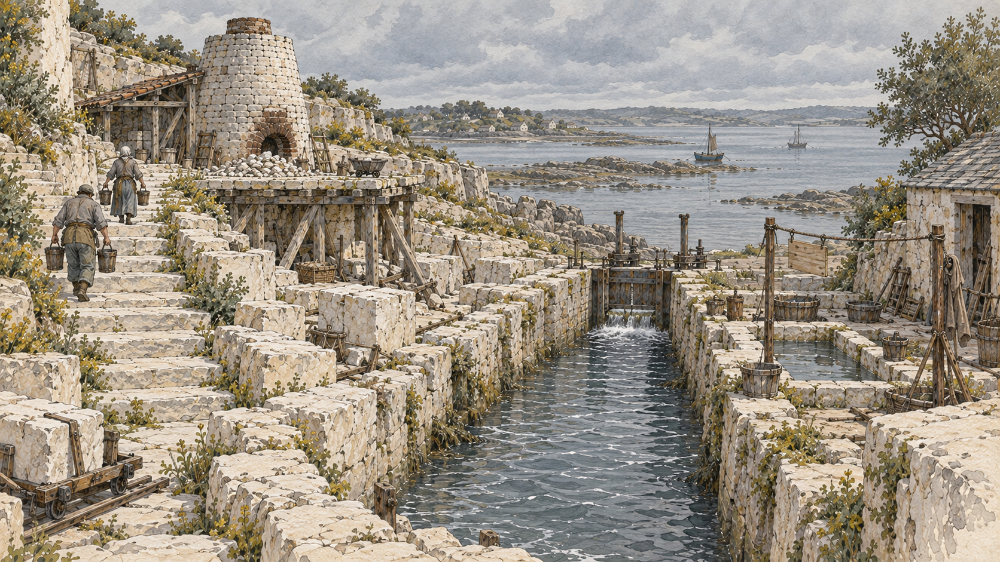
粉の溝を直したあと
小水門へ届く掘り直した溝、休業中の洗い場、上の井戸へ桶を運ぶ人。窯台と石段は未修理。
原寸を開く ↗